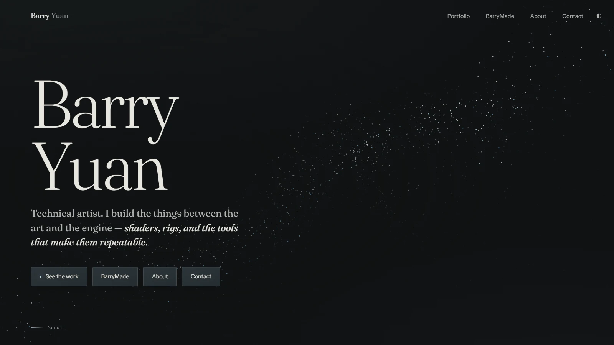
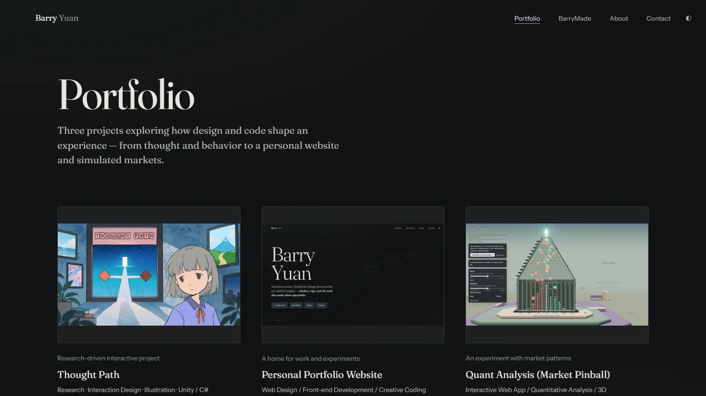
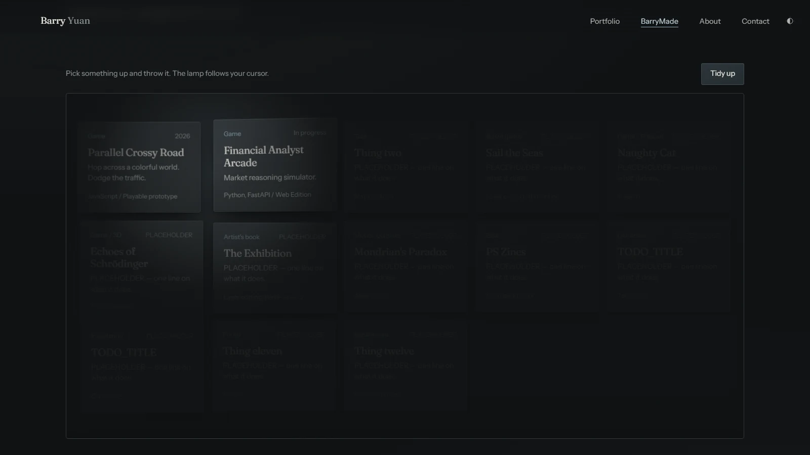

A home for selected work and small experiments
Personal Portfolio Website
A personal website with two ways into the work: a considered Portfolio for selected projects, and BarryMade, a playful workshop of smaller experiments. Typography, space, and motion give each section its own pace while keeping the site connected.
- Web Design
- Front-end Development
- Creative Coding

01 / Design
An editorial frame for the work
Graphite surfaces, warm accents, and fine dividing lines frame large Fraunces headings and Instrument Sans body text. Generous spacing gives project writing and images room to breathe. A shared navigation connects Portfolio, BarryMade, About, and Contact, while a saved light / dark preference carries between pages.
Built with HTML, CSS, and JavaScript, the site uses a pointer-responsive WebGL field on the landing page, page fades, hover details, and scroll-driven motion. Responsive grids and reduced-motion styles adapt the experience to different screens and preferences.
02 / Selected work
Portfolio
An image-led index leads to dedicated project pages. Each page moves from an introduction and project links into a long-form account of the work, with large media, concise section labels, and a reading-progress line.

03 / The workshop
BarryMade
BarryMade treats smaller projects as objects on a desk. Cards can be picked up, dragged, and thrown; a cursor-following lamp adds depth, and the Tidy up control brings the collection back into order. Each card opens its own project page.

Explore